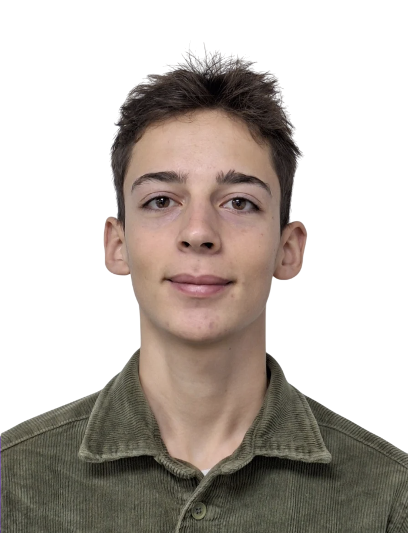

Adrien Leglise Développeur Full Stack
À Propos.
Bonjour, je m'appelle Adrien LEGLISE. Je viens de terminer mon BUT Informatique, enrichi par une année à l'international à l'UQAC, au Canada.
Aujourd'hui, j'ai créé Hyrid avec trois collaborateurs. Nous concevons des applications web, des sites et des produits numériques spécialisés, en gardant une approche simple : comprendre le besoin, livrer proprement et améliorer avec les retours terrain.

Compétences Acquises.
Analyser, préparer et modéliser des données
À l'UQAC, j'ai travaillé sur un projet de science des données autour des prix négatifs de l'électricité. J'ai manipulé des séries temporelles, préparé des variables métier et évalué des modèles de classification sur un problème déséquilibré.
- Python, pandas, scikit-learn
- Feature engineering temporel
- SQL, R et visualisation de données
Travailler dans un cadre nouveau et collectif
L'année à l'international m'a appris à m'adapter rapidement à une nouvelle organisation de cours, à clarifier mon rôle dans une équipe et à rendre mon travail compréhensible pour les autres membres du projet.
- Autonomie et adaptation interculturelle
- Communication technique et restitution
- Organisation, documentation et esprit critique
Projets Récents.
Mon Parcours.
Mon Bac
J'ai obtenu un baccalauréat général avec les spécialités Mathématiques et Numérique et Sciences Informatiques (NSI).
Mon BUT Informatique
J'ai terminé mon BUT Informatique à Grenoble, où j'ai consolidé mes bases en développement web, bases de données, gestion de projet et programmation.
Mon stage au CEA
Au CEA Grenoble, j'ai travaillé sur un projet d'IA appliqué à la classification d'images de bactéries, avec un contexte scientifique exigeant et des données issues de l'imagerie lensless.
Mon année à l'UQAC
J'ai effectué une année à l'international au Canada, avec des projets orientés data, web avancé, mobile et gestion de projet.
Hyrid et mes projets actuels
Après le BUT, j'ai créé Hyrid avec trois collaborateurs. Nous développons des sites, des applications web et des produits spécialisés comme Ironeo.
Contactez-moi
Si vous avez une idée de projet, envisagez une collaboration, ou souhaitez simplement discuter, je suis à votre disposition.
adrien.leglise2@gmail.com